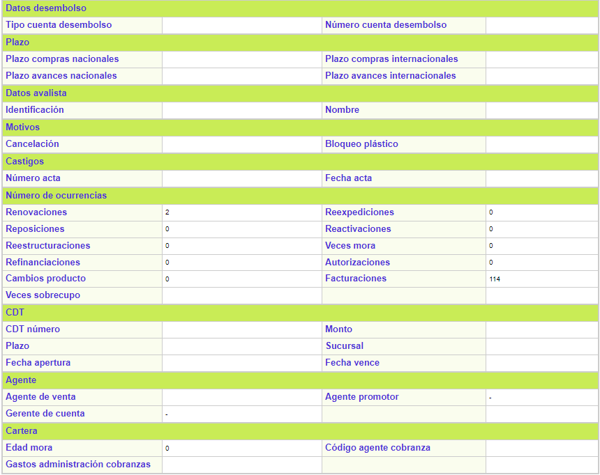

Más información
En este formulario que se invoca desde la Consulta centralizada de tarjeta, la entidad puede conocer información adicional, de carácter general para la tarjeta y relacionada con: extractos, calificaciones, cuenta para débito automático, información del cdt que garantiza el crédito (si aplica), entre otros datos.
La opción está estructurada en varios bloques que contienen en su mayoría de 2 a 6 campos y que agrupan la información para facilitarle al usuario la consulta de los datos correspondientes.


Descripción de campos
|
Nivel detalle extracto |
Campo que indica la manera como se van a presentar las transacciónes en el extracto y que puede ser Todas las trx activas, Solamente trx del mes o Sin transacciones. |
Tipo extracto |
Este campo muestra si el tipo de extracto asociado a la tarjeta corresponde a Consolidado por cliente, Consolidado por tarjeta o Independiente. |
Entrega extracto |
Campo que señala el lugar en donde se entrega el extracto al cliente, de acuerdo con lo que se haya decidido al momento de ingresar la solicitud del nuevo crédito para la tarjeta y puede ser Dirección, Oficina o Punto que indica si el extracto es entregado en el mismo punto de entrega del plástico. |
Punto de entrega |
En este campo se indica según el caso, el punto de entrega seleccionado por el cliente para que le fuera entregada su tarjeta una vez esta se realzó. |
Calificación externa asociada |
Campo que contiene la calificación externa asociada con el producto al que pertenece la tarjeta y que permite determinar los porcentajes de provisión correspondientes que debe efectuar la entidad de acuerdo con sus políticas internas y/o la normatividad existente al respecto. |
Calificación provisión |
Registra la calificación actual de la tarjeta y que determina los porcentajes de provisión correspondientes que debe efectuar la entidad de acuerdo con el comportamiento de la obligación. |
Calificación sistema |
Señala el código y nombre de la categoría o nivel de clasificación de cartera asociado actualmente con la tarjeta de acuerdo con lo definido por la entidad para cada modalidad de crédito en particular. |
Calificación externa |
Campo que contiene el código y nombre de la calificación actual de la tarjeta de acuerdo con el grado de vencimiento de la cartera definido por las entidades estatales. |
Puntaje |
Campo que indica el resultado de la última calificación obtenida por el cliente titular de la tarjeta, en caso que la entidad la hubiere efectuado. |
Fecha puntaje |
Despliega en fecha YYYY-MM-DD la fecha en la cual se hizo la calificación al cliente. |
Convenio |
En este campo se indica si es el caso el convenio al cual se encuentra asociado el producto al que pertenece la tarjeta del cliente y que le confiere algunas condiciones particulares. |
Comportamiento 12 meses |
Campo que contiene información acerca del comportamiento que ha tenido la tarjeta en los últimos 12 meses, como resultado de los consumos efectuados por el cliente. |
Número de acción |
En caso que el producto al que pertenece la tarjeta tenga la condición de generar número de acción, en este campo se despliega el número de la misma y que se registra durante el proceso de ingreso la solicitud de nuevo crédito. |
Valor cupo anterior |
Si la tarjeta ha tenido variaciones en su cupo bien sea como resultado de solicitudes individuales de aumento de cupo o mediante las variaciones masivas de cupo que la entidad efectúa periódicamente de acuerdo con sus políticas, en este campo se despliega el monto del cupo que tenía asignado la tarjeta antes de sucederse el mas reciente de los eventos mencionados. |
Nivel de consumo |
Este campo muestra con base en los consumos efectuados por la tarjeta el porcentaje de utilización que ha tenido la misma en relación con el cupo que tiene asignado. El campo se muestra con valores de una escala de 1 a10 siendo el mas alto el 10 (consumos entre el 90% y el 100%) y el mas bajo el 1 (entre 0 y 10%). |
Esquema puntaje |
Despliega el esquema de puntajes al que se encuentra asociado el cliente de acuerdo con los diferentes esquemas que la entidad ofrezca como millas, premios, abonos a cuenta, etc. |
Tipo débito |
En caso que el cliente haya registrado la opción de débito automático para el pago de su obligación, en este campo se indica si el valor que se debe debitar de la cuenta del cliente es el correspondiente al Pago mínimo o al Pago total que presente el crédito. |
Tipo cuenta |
Campo en el que se indica si la cuenta registrada por el cliente para efectuarle el débito automático es de Ahorros o Corriente. |
Número de cuenta |
En este campo se muestra el número de la cuenta a la cual se debe efectuar el débito automático. |
Moneda |
Campo en el que se indica la moneda en la que se encuentra denominada la cuenta registrada por el cliente para efectuarle el débito automático. |
Tipo cuenta desembolso |
Si de acuerdo con las características del producto al que pertenece la tarjeta, se ha determinado que este requiere una cuenta de desembolso para su utilización, en este campo se indica si la cuenta registrada por el cliente para tal fin es de Ahorros, Corriente o Rotativo. |
Número cuenta desembolso |
Campo en el que se despliega el número de la cuenta en la que se van a afectuar los desembolsos requeridos de acuerdo con las utilizaciones efectuadas por el cliente. |
Plazo compras nacionales / internacionales |
Si a la tarjeta se le ha aplicado la novedad cambio plazo diferidos, en este campo se muestra el plazo asignado mediante la misma para todas las transacciones de compras nacionales / internacionales vigentes de la tarjeta. |
Plazo avances nacionales / internacionales |
Campo que contiene el plazo asignado para todas las transacciones de avances nacionales / internacionales vigentes de la tarjeta cuando a ésta se le ha aplicado la novedad cambio plazo diferidos. |
Identificación (avalista) |
En caso que el producto al que pertenece la tarjeta tenga la condición de exigir avalista, en este campo se despliega el tipo y número de identificación del cliente que está avalando la obligación contraída por el tarjeta habiente. |
|
Nombre (avalista) |
Campo que muestra el nombre del cliente asociado con el tipo y número de identificación anterior, quien es la persona que avala la obligación. |
|
Cancelación |
Campo que indica el motivo de cancelación de la tarjeta, en caso que este sea el estado actual de la misma. |
Bloqueo plástico |
Este campo muestra el bloqueo aplicado a la tarjeta como resultado de la cancelación de la misma. |
Número acta (castigo) |
Cuando la tarjeta se encuentra castigada, en este campo se despliega el número de acta mediante la cual la entidad oficializa el castigo. |
Fecha acta (castigo) |
En este campo se indica la fecha en la que la entidad expidió el acta en la cual se formaliza el castigo de la obligación. |
Renovaciones / Reexpediciones / Reposiciones / Reactivaciones |
Campo que contiene la información acerca del número de veces que la tarjeta ha presentado eventos de renovación, reexpedición, reposición o reactivación como resultado de las solicitudes presentadas por el cliente o generadas internamente por el sistema. |
Reestructuraciones / Refinanciaciones |
En caso que la tarjeta haya sido reestructurada o refinanciada para modificar los plazos y tasas de interés con el fin de facilitarle al cliente el pago de la obligación, en estos campos e indica respectivamente el número de veces que cada evento se ha registrado. |
Veces mora |
Señala la cantidad de periodos durante los cuales la tarjeta se ha encontrado en mora por el no pago oportuno de la obligación. |
Autorizaciones |
Campo que dependiendo de si es la misma entidad quien efectúa las autorizaciones directamente muestra en tiempo real el número de autorizaciones otorgadas y pendientes por cruzar. Si la entidad no autoriza directamente, este campo muestra las autorizaciones otorgadas y pendientes de cruzar que existían en el momento del último proceso batch ejecutado, lo que puede implicar que no se muestre ningún valor en el evento que las autorizaciones se crucen dentro del mismo proceso diario. |
Cambio de producto |
Este campo indica el número de veces que se han efectuado cambios de producto para la tarjeta. |
Facturaciones |
Despliega el número de veces que la tarjeta ha sido incluida en los procesos de facturación ejecutados por la entidad. |
Veces sobrecupo |
En este campo se indica el número de periodos durante los cuales la tarjeta se ha encontrado en sobrecupo como resultado de utilizaciones efectuadas por valores que superan el cupo asignado. |
CDT número |
Si de acuerdo con las características del producto al que pertenece la tarjeta se ha determinado que la obligación debe ser garantizada mediante un CDT, en este campo se despliega el número del misma y que se registra durante el proceso de ingreso la solicitud de nuevo crédito. |
Monto |
Campo que contiene el monto por el cual se encuentra expedido el CDT que garantiza la obligación. |
Plazo |
Indica la cantidad de meses de vigencia que tiene el CDT que garantiza la obligación, para ser redimido o renovado. |
Sucursal |
Este campo muestra la sucursal de la entidad en la cual fue expedido o generado el CDT correspondiente. |
Fecha apertura |
Campo en formato YYYY-MM-DD que contiene la fecha en la cual se expide el CDT que garantiza la obligación. |
Fecha vence |
En este campo en formato YYYY-MM-DD se indica la fecha en la cual vence el CDT que garantiza la obligación. |
Agente de venta |
Campo en el que se indica el nombre del agente de venta a quien se le atribuye la colocación de la tarjeta. |
Agente promotor |
En este campo se muestra el nombre del agente promotor a quien se le debe reconocer la labor de mercadeo para la colocación de la tarjeta. |
Edad mora |
Campo en el que se indica la altura de mora actual que presenta la tarjeta, de acuerdo con el cumplimiento dado por el cliente a la obligación. |
Código agente cobranza |
Si de acuerdo con la altura de mora de la tarjeta esta se encuentra en proceso de cobro, en este campo se muestra el nombre del agente que tiene actualmente a cargo la gestión de recuperación de la obligación. |
Gastos administración cobranzas |
En el evento en que por el no pago oportuno de la obligación se hayan generado los llamados GAC, dicho valor se vería reflejado en este campo. actualmente a cargo la gestión de recuperación de la obligación. |